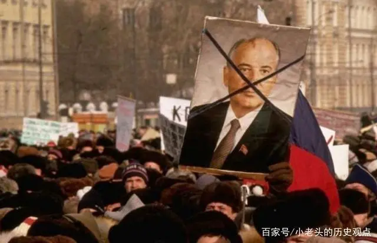

<!DOCTYPE html>
<html lang="en">
<head>
    <meta charset="UTF-8">
    <title>Cause</title>
</head>
<body>

</body>
</html>
<h1 style="font-size:60px;">Cause</h1>
<h1>历史方面</h1>
<a href="https://baijiahao.baidu.com/s?id=1725999574093912899&wfr=spider&for=pc"> Click History</a>
<h1>苏联</h1>
<p>俄乌冲突的核心因素之一在于克里米亚，克里米亚，地处黑海要塞，地形上属于黑海上的半岛，类似于中国的胶东半岛，有着绝对性地理优势，犹如一把利剑插入黑海腹地，同时也是俄罗斯内陆海亚速海唯一与黑海接壤的通道，其通道夹在克里米亚与俄罗斯大陆之间，高傲的赫鲁晓夫同志为庆祝俄乌合并45周年，一时高兴伏特加喝醉了并将其划给乌克兰（确实离乌克兰更近，陆路接壤，说实话，跟俄罗斯只能说是隔海相望，要不是叶卡捷琳娜二世煞费苦心的从强大的奥斯曼土耳其帝国抢过来哪里属于俄罗斯（doge),或许当时哪怕是现在也没有人预料到苏联解体，所以当时俄罗斯苏维埃社会主义共和国也没管，反正社会主义一家亲，相互帮助，加之有华约的存在，乌克兰不敢出幺蛾子。</p>
<html>
<body>



</body>
</html>
<p>但伴随着1991苏联红色帝国解体，东欧剧变，越来越多东欧国家为了发展自生经济，改善民生福祉，纷纷加入西方的怀抱，加上有布拉格之春，匈牙利事件本就对对莫斯科有负面的印象，最后以及西方的推动下，纷纷加入了北约，乌克兰由于跟俄罗斯有较长的陆路边境线所以一直摇摆不定，处在风雨飘摇之中，由于长期的摇摆不定，犹犹豫豫，再加上乌克兰在经济转型的过程中滋生了大量的贪腐，以及寡头，并没有经济改革彻底，导致政府逐渐失去了民众信任，所以就不难理解为什么泽连斯基能当选以相当高的支持率，其属于亲西派，坚定不移的学习其他东欧国家，加入北约，加入欧盟，为此还将其列入了宪法，宪法是国家的根本大法，几乎是一锤定音，而他却忘了一个重要的因素，俄罗斯的黑海舰队在其领土内，俄罗斯跟美国是敌对关系，俄罗斯是不可接受的，一个国家不可能同时有两个敌对势力国家的军队同时驻扎在自己的领土上，除非是战争，于是就有了后续的克里米亚事件，俄罗斯大刀阔斧将其吞并。</p>
<html>
<head>
<style>
body {
    background-color: Grey
}
</style>
</head>
<body>
</body>
</html>

